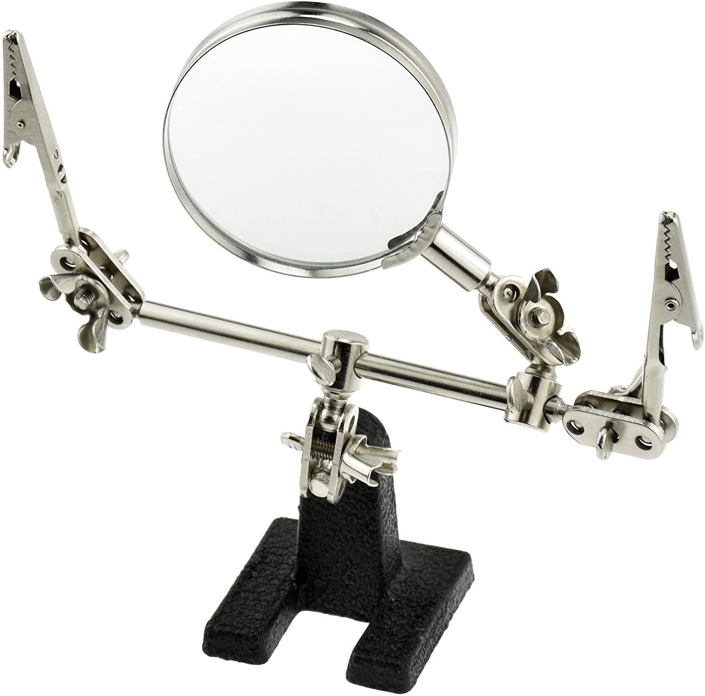
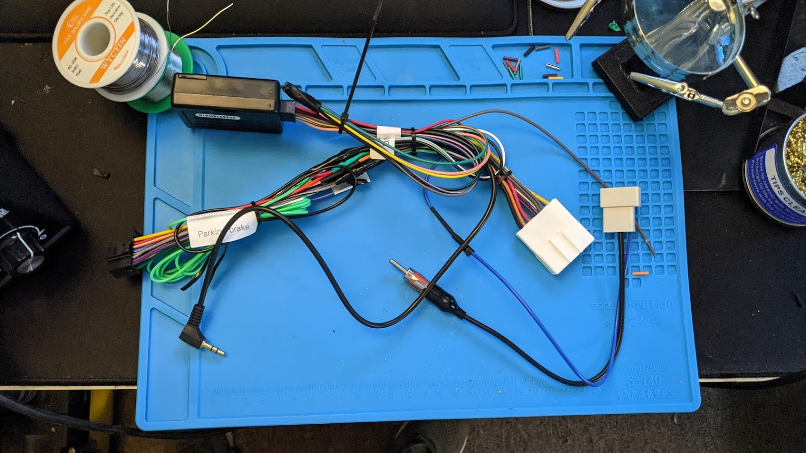

Tools Needed
- Wire Strippers
- Soldering iron and solder
- Heat shrink tubing
- 2010-2014 Subaru Outback radio wiring harness
- Metra ASWC-1 steering wheel control module
- Wiring harness from your choice of aftermarket radio
Recommendations
While not required, a set of "helping hands" (pictured below) to assist in holding the wires while you solder them is highly recommended.
Wiring Guide
To begin, you are going to want to start soldering the corresponding colored wires from your Subaru Oubtack wiring harness to your aftermarket head unit's wiring harness. These wires will have matching color coating as they are standard. You may or may not have matching wires for all of your aftermarket head unit's harness. Be sure to use your heat shrink tubing over the individual wires to insulate them. Avoid heat shrink on the black ground wire and the red 12v wire as well for now.
Once this is complete, go ahead and grab your Metra Axxess ASWC-1. Now you will need to solder the red wire of the ASWC-1 to the red 12v wire from your harness. Next, solder the black and white/green wire from the ASWC-1 to the black ground wire in your harness. Heat shrink both connections and you should end up with soemthing like the photo below.
After your done wiring your harness, go ahead and insulate the ends of all the unused wires and zip tie them to clean it up a bit. Be sure to leave the grey/red wire alone though as we will be using it in your next step. Once you are satisfied with your harness, move on to the Install Guide section of the site.